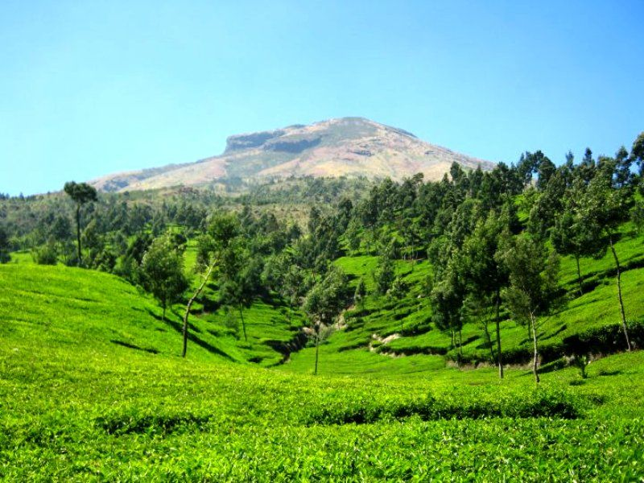
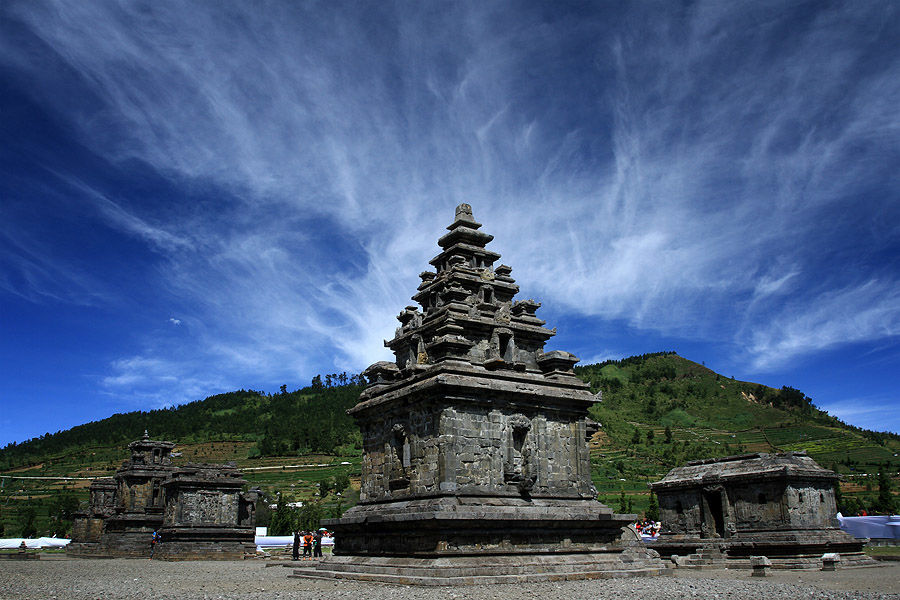
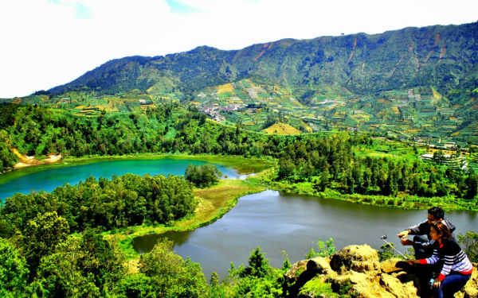
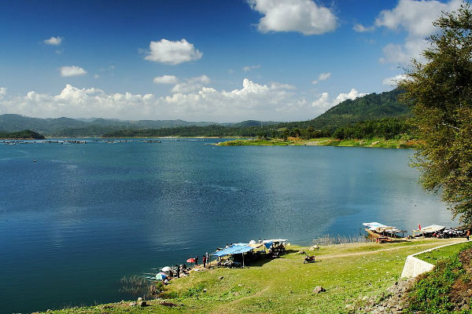
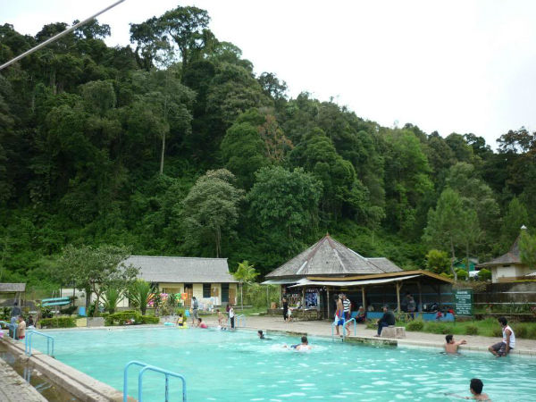

Bagi banyak orang,Wonosobo selalu identik dengan Gunung Dieng. Padahal Wonosobo juga punya banyak tempat-tempat menarik lho.Salah satu kabupaten yang terdapat di Jawa Tengah ini menyimpan banyak tempat indah yang bikin kita wajib ke sana. Apa saja kira-kira? Berikut 5 tempat wisata di Wonosobo yang harus kamu kunjungi
1. Agrowisata Tambi

Tambi adalah agrowisata kebun teh. Begitu sampai ke ladang teh, harum semerbak wanginya bakal memanjakan hidungmu. Belum lagi suhu udaranya yang berkisar sekitar 15 derajat Celcius bikin kamu betah di sana.Perkebunan teh Tambi terletak di lereng Gunung Sindoro dengan ketinggian lebih dari 1200-2000 meter di atas permukaan laut. Dengan suhu 14-24°C.Agrowisata Tambi sangat cocok untuk melepaskan kelelahan karena tempat ini telah difasilitasi dengan penginapan, taman bermain, lapangan tenis, dan fasilitas outbound. Para pengunjung juga dapat memiliki tur mengunjungi kebun dan industri teh untuk melihat proses budidaya teh dan produksi
2. Kompleks Candi Arjuna

Seperti di India.Candi Arjuna adalah sebuah bangunan candi Hindu yang terletak di Dataran Tinggi Dieng, Kabupaten Banjarnegara, Jawa Tengah, Indonesia.Candi Arjuna merupakan salah satu bangunan candi di Kompleks Percandian Arjuna, Dieng. Candi Arjuna diperkirakan sebagai candi tertua, candi ini diperkirakan dibangun pada abad 8 Masehi oleh Dinasti Sanjaya dari Mataram Kuno. Di kompleks ini juga terdapat Candi Semar, Candi Srikandi, Candi Puntadewa, dan Candi Sembadra. Candi Arjuna terletak paling utara dari deretan percandian di kompleks tersebut. Sementara itu, Candi Semar adalah candi perwara atau pelengkap dari Candi Arjuna. Kedua bangunan candi ini saling berhadapan.Seperti umumnya candi-candi di Dieng, masyarakat memberikan nama tokoh pewayangan Mahabarata sebagai nama candi.Selain itu, tempat tersebut dijadikan sebagai tuan rumah Dieng Cunture Festival.
3.Wisata Petak 9 Dieng

Wana Wisata Petak 9 Bukit Sidengkeng Dieng. Pemandangan Dataran Tinggi Dieng memang sangat memikat. Deretan bukit dan gunung-gunung dengan pepohonan hijau berkabut yang mengelilingi telaga-telaga indah dan pemukiman penduduk di bawahnya menciptakan lanskap alam yang mempesona. Lanskap pemandangan Dataran Tinggi ini tentu akan lebih indah jika disaksikan di tempat yang tinggi dan strategis. Salah satu tempat strategis untuk memandang keindahan alam Dataran Tinggi Dieng dari dari atas adalah Wana Wisata Petak 9 Bukit Sidengkeng Dieng. Sama seperti Telaga Warna, Wana Wisata Petak 9 Bukit Sidengkeng Dieng juga terletak di Desa Dieng Wetan, Kecamatan Kejajar, Kabupaten Wonosobo, Jawa Tengah.
4. Waduk Wadaslintang

Waduk Wadaslintang adalah sebuah waduk yang terletak di Wadaslintang, Wonosobo, Jawa Tengah, Indonesia. Waduk Wadaslintang terletak di bagian selatan Wadaslintang, berbatasan dengan Padureso, Kebumen. Waduk Wadaslintang berjarak 46 kilometer dari pusat kota Wonosobo.Waduk ini menampung air dari Sungai Medono dan sejumlah anak sungainya, seperti Sungai Lancar, Sungai Waturangkang, Sungai Somagede, dan Sungai Tritis. Hingga tahun 2006, bendungan dari waduk ini adalah bendungan dengan inti basah tertinggi di dunia.Waduk ini terkenal sebagai bangunan waduk tinggi di Indonesia. Bahkan ketinggian bangunannya mencapai 125 meter. Kecantikan panorama alamnya sungguh sangat menggoda, apalagi bagi yang memiliki hobi memancing, Waduk Wadaslintang adalah surga.
5. Pemandian Air Panas Kalianget

Kabupaten Wonosobo, yang terkenal dengan julukan "Negeri di Atas Awan", menyimpan banyak destinasi wisata menarik, termasuk wisata buatan. Salah satu destinasi populer di Kabupaten ini adalah Pemandian Kalianget. Menurut informasi dari laman resmi Visit Jawa Tengah, Pemandian Kalianget merupakan salah satu obyek wisata yang sangat diminati di Kabupaten Wonosobo. Alasan di balik popularitasnya yang tinggi pun menjadi sorotan.Pertama, Pemandian Kalianget mencatatkan jumlah pengunjung yang cukup besar, dengan 104.435 pengunjung dalam satu tahun terakhir Harinini menunjukkan minat masyarakat terhadap tempat ini.Kedua, Pemandian Kalianget terletak di Desa Kalianget, Kecamatan Wonosobo, Kabupaten Wonosobo. Tempat ini adalah pemandian alami yang airnya mengandung belerang, dipercaya memiliki manfaat bagi kesehatan kulit.Ketiga, fasilitas yang disediakan di Pemandian Kalianget cukup lengkap. Mulai dari lapangan sepak bola, lapangan tenis, kolam renang, kolam ikan, hingga tempat bermain. Ini membuat tempat ini cocok untuk dikunjungi bersama keluarga.